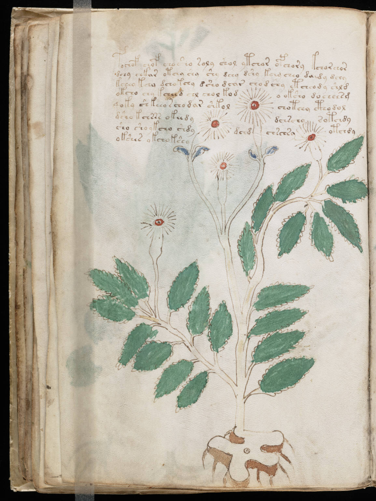

f27v
1fochof chof cho sho soly shol ytchor ofchory kchorchor2dchy chkar otchy shy shy dchy dshy kchy cheo da dy dchy3kchey kchy dchokchy dsho dchir chodchy etcheody shld4okcho chy kcheed chl chol kodo oksho doeeeesm5qoky shkeeo schodar shkolchotchy cthodol6dsho kchrrr okeedydchschysotchdy7sho sho ykcho shdydchdchschsaotchdy8okshes okchokshy
